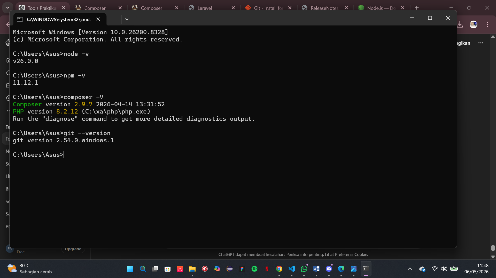
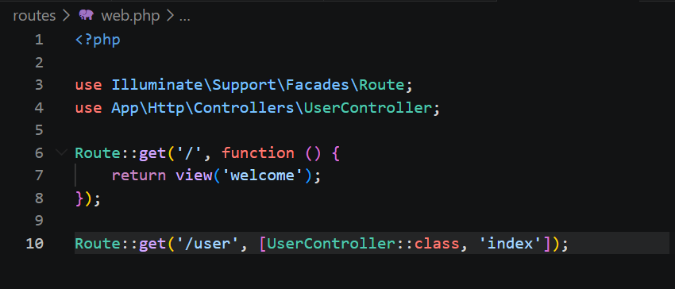
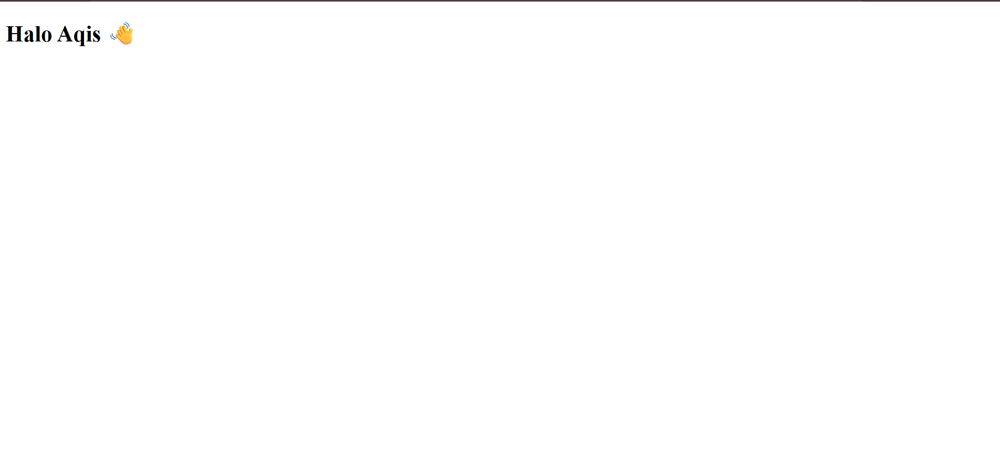

Report 1 — Instalasi Laravel
I. Tujuan Praktikum
Setelah menyelesaikan praktikum ini, mahasiswa diharapkan mampu:
- Memahami konsep dasar framework Laravel.
- Melakukan instalasi Laravel beserta tools pendukung.
- Menjalankan project Laravel menggunakan artisan.
- Memahami struktur dasar Laravel dan konsep MVC.
- Menghubungkan Laravel dengan database MySQL.
II. Dasar Teori
Laravel merupakan framework PHP berbasis open source yang digunakan untuk membangun aplikasi web dengan konsep MVC (Model, View, Controller). Laravel dikembangkan oleh Taylor Otwell dan menjadi salah satu framework PHP paling populer karena memiliki sintaks yang sederhana, modern, serta mendukung proses pengembangan web yang lebih cepat dan terstruktur.
Laravel menyediakan berbagai fitur seperti routing, middleware, authentication, blade template engine, artisan CLI, dan Eloquent ORM yang mempermudah pengelolaan database serta pengembangan aplikasi.
Dalam proses pengembangan Laravel dibutuhkan beberapa software pendukung seperti XAMPP sebagai web server dan database server, Composer untuk mengelola dependency PHP, serta Node JS dan NPM untuk mengelola asset frontend.
III. Langkah-Langkah Praktikum
-
Install XAMPP
Mengunduh dan menginstall XAMPP sebagai web server, PHP, serta MySQL server yang digunakan dalam pengembangan Laravel.
-
Install Composer
Menginstall Composer sebagai package manager PHP untuk mengelola dependency framework Laravel.
-
Install Laravel
Membuka terminal kemudian menjalankan perintah instalasi Laravel:

-
Mempersiapkan Software Pendukung
Menginstall Node JS dan NPM untuk mendukung pengelolaan frontend dan asset pada Laravel.

-
Menjalankan Laravel
Masuk ke folder project kemudian menjalankan server Laravel menggunakan perintah:cd laravel-app php artisan serve
-
Menghubungkan Laravel dengan MySQL
Membuat database pada PhpMyAdmin kemudian melakukan konfigurasi file .env pada Laravel.DB_CONNECTION=mysql DB_HOST=127.0.0.1 DB_PORT=3306 DB_DATABASE=laravel_db DB_USERNAME=root DB_PASSWORD=

-
Setelah konfigurasi selesai, dilakukan pengujian koneksi database
menggunakan migration Laravel.
php artisan migrate
IV. Challenge MVC
- Membuka project Laravel menggunakan Visual Studio Code.
-
Membuka terminal kemudian membuat controller baru
dengan nama UserController menggunakan perintah:
php artisan make:controller UserController
-
Setelah controller berhasil dibuat, kemudian menambahkan
function index() pada file
UserController.php.
public function index() { return view('user'); }
- Membuat file view baru pada folder resources/views dengan nama user.blade.php.
-
Menambahkan tampilan HTML sederhana pada file
user.blade.php.
<h1>Halaman User</h1> <p>Selamat datang di halaman user Laravel.</p>

-
Membuka file web.php pada folder
routes kemudian menambahkan routing
untuk halaman user.
use App\Http\Controllers\UserController; Route::get('/user', [UserController::class, 'index']);
-
Menjalankan Laravel menggunakan perintah:
php artisan serve

-
Membuka browser dan mengetik URL:
http://127.0.0.1:8000/user
sehingga halaman view user berhasil ditampilkan.
V. Hasil dan Pembahasan
Berdasarkan praktikum yang telah dilakukan, proses instalasi Laravel berhasil dilakukan dengan baik menggunakan Composer. Seluruh software pendukung seperti XAMPP, Node JS, dan NPM berhasil diinstall dan dapat digunakan.
Project Laravel berhasil dibuat dan dijalankan menggunakan perintah php artisan serve. Halaman welcome Laravel berhasil tampil pada browser yang menandakan bahwa Laravel telah berjalan dengan baik.
Selain itu, Laravel juga berhasil dihubungkan dengan database MySQL melalui konfigurasi file .env. Proses migration database berjalan dengan sukses sehingga tabel bawaan Laravel berhasil dibuat pada database.
VI. Kesimpulan
Dari praktikum yang telah dilakukan dapat disimpulkan bahwa Laravel merupakan framework PHP yang mempermudah proses pengembangan aplikasi web dengan konsep MVC yang terstruktur.
Proses instalasi Laravel membutuhkan beberapa software pendukung seperti XAMPP, Composer, Node JS, dan NPM. Laravel dapat dijalankan menggunakan artisan server dan dapat dihubungkan dengan database MySQL melalui konfigurasi file environment.
Dengan adanya fitur-fitur bawaan Laravel, proses pengembangan website menjadi lebih cepat, rapi, dan efisien.